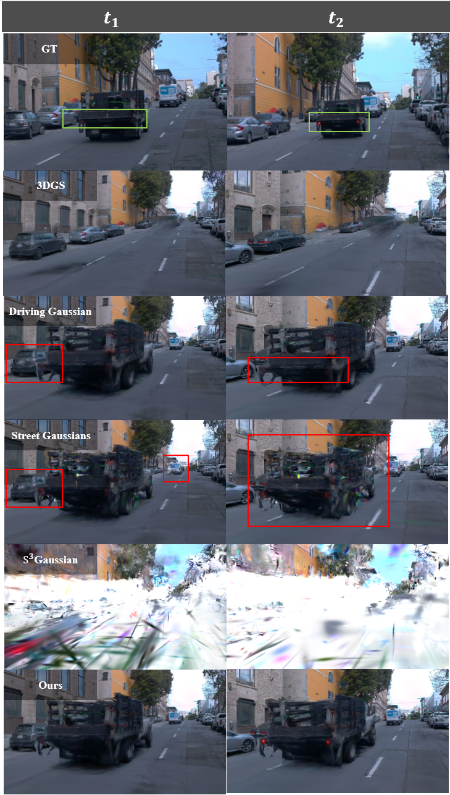
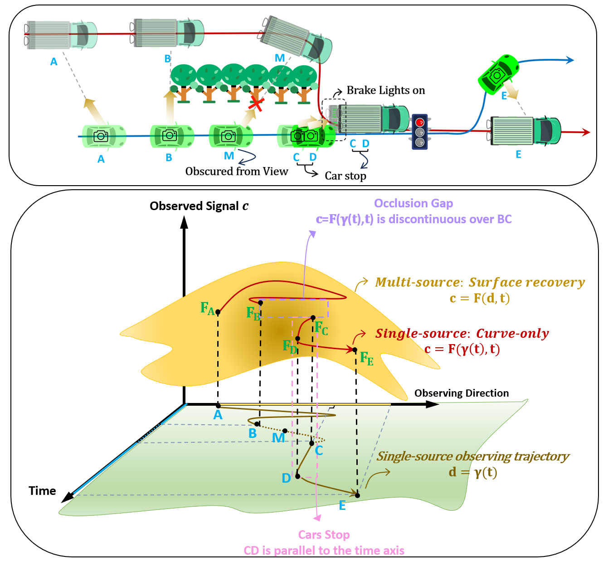
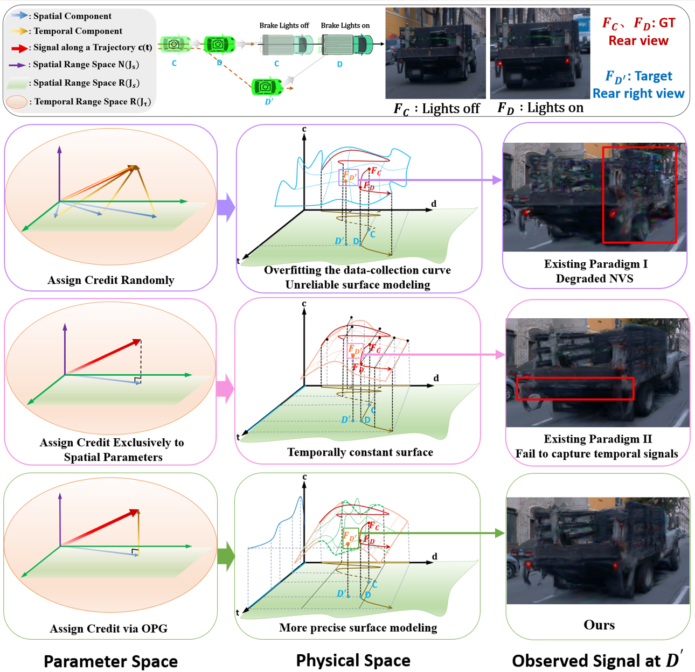
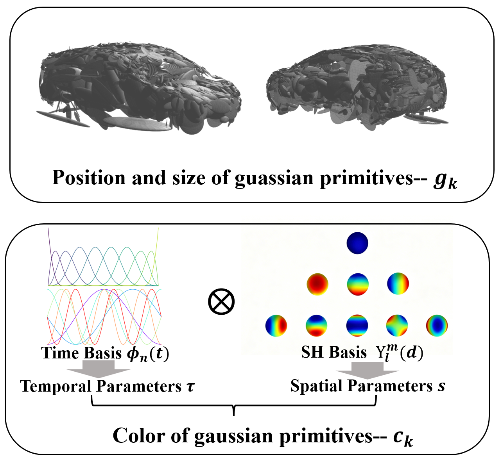

This work is under double-blind review; author information is withheld.

High-fidelity street scene reconstruction is pivotal for end-to-end autonomous driving simulation, where novel-view synthesis and time-varying information modeling are the two key elements of 4D reconstruction tasks. Contrary to common belief, existing methods actually suffer from severe rendering degradation and fail to achieve both simultaneously. We first establish an information-geometric diagnostic framework, revealing that this limitation stems from a credit assignment dilemma between spatial and temporal parameters. Specifically, the deterministic coupling between viewpoint and time in single-source data collecting creates a low-rank structure that induces massive null-space ambiguity between view-dependent and time-varying components. Temporal information overshadows spatial cues, causing the estimation variance of spatial parameters to diverge. To address this issue, we propose a hierarchical training method designed to restore spatial identifiability. It prioritizes the integrity of spatial representations by securing them in an initial stage, then restricts temporal updates to the spatial null space, enabling proactive credit assignment. A temporal regularization strategy is proposed to further refine the temporal solution space by imposing a smoothness constraint based on the physical prior of consistent appearance evolution. Experiments demonstrate that our method maintains stable NVS capabilities while modeling time-varying information.



Existing 4D street scene reconstruction methods broadly follow two training paradigms for coupling spatial and temporal parameters. As shown below, both paradigms entangle the optimization of view-dependent appearance and time-varying dynamics, which is the root cause analyzed in our diagnostic framework.
Existing Paradigm 1 vs. Paradigm 2 (scene 060).
Existing Paradigm 1 vs. Paradigm 2 (scene 073).
Under open-loop evaluation on the training trajectory, existing methods appear to perform well. However, this apparent success conceals two fundamental failures: novel-view synthesis degrades severely away from the training trajectory, and time-varying effects (e.g., lighting changes of cars) are not captured.
Existing methods perform well in open-loop evaluation (scene 060): rendering along the training trajectory remains plausible.
Existing methods perform well in open-loop evaluation (scene 073).
When synthesizing genuinely novel views, existing methods show poor novel-view synthesis capabilities (scene 060).
Poor novel-view synthesis of existing methods on an additional sequence.
Existing methods of the second paradigm cannot capture temporal dynamics such as the lighting of cars.
Our method maintains stable novel-view synthesis while faithfully modeling time-varying information, whereas existing methods sacrifice one for the other.
Comparison between existing methods and ours (scene 073): ours preserves spatial fidelity while modeling temporal dynamics.
Comparison between existing methods and ours on an additional sequence.
We ablate the two core components of our method: the proactive credit assignment enabled by Orthogonal Projected Gradient (OPG), and the Temporal Regularization Strategy.
Ablation on scene 060: existing training vs. ours with proactive credit assignment (OPG).
Ablation on scene 073: existing training vs. ours with proactive credit assignment (OPG).
Ablation on scene 060: proactive credit assignment alone vs. with the additional temporal regularization.
Ablation on scene 073: proactive credit assignment alone vs. with the additional temporal regularization.
@article{anonymous2025hidden,
title = {The Hidden Rendering Degradation in 4D Driving Scene Reconstruction},
author = {Anonymous},
journal = {Under review},
year = {2025}
}